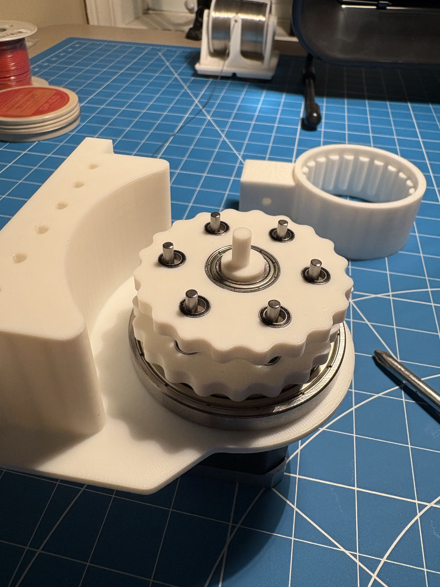

Naysan Munje
Mechanical Engineering Student
Hi I'm Naysan and I like robots.
Projects
-

Cycloidal Gearbox 20:1 actuator for a robotic arm A compact, low backlash, 3D printed 20:1 gearbox designed for my robotic arm. -
 OREO Robotic Arm
4-DOF, stepper-driven robotic arm
OREO is a 4 degree of freedom robotic arm built from repurposed 3D printer parts, custom cycloidal gearboxes, and 3D printed components.
OREO Robotic Arm
4-DOF, stepper-driven robotic arm
OREO is a 4 degree of freedom robotic arm built from repurposed 3D printer parts, custom cycloidal gearboxes, and 3D printed components.
-
 HPod Hexapod
Low-cost, 18-DOF walking robot
HPod is a low cost, six legged robot made with 3D printed parts and 18 servo motors, controlled wirelessly with an ESP32.
HPod Hexapod
Low-cost, 18-DOF walking robot
HPod is a low cost, six legged robot made with 3D printed parts and 18 servo motors, controlled wirelessly with an ESP32.